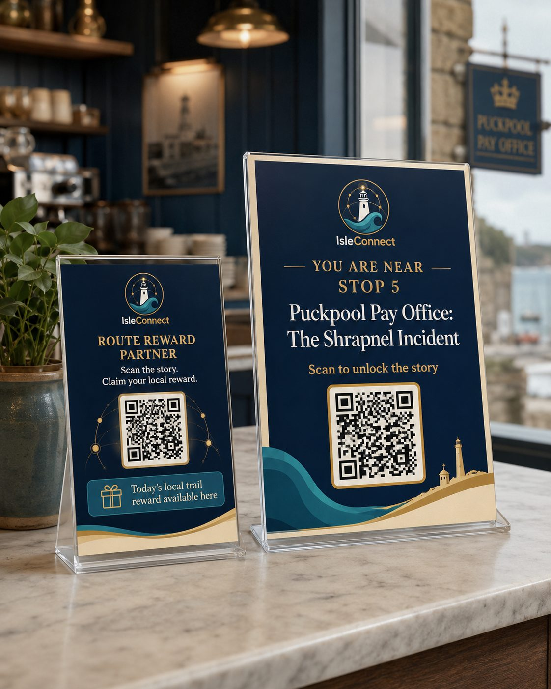

Turn local curiosity into footfall and action.
Whether you run an independent venue, manage a visitor attraction, hold community archives, or want to launch a 30-day footfall pilot — IsleConnect connects stories to real-world outcomes.
Be discovered
Appear when someone is already exploring nearby and ready to stop.
Tell your story
Show people what makes your venue or place worth stopping for — not a generic directory listing.
Measure what happens
Understand whether visitors continue, explore, ask for directions or take action.
It starts with a card on your counter
No app, no hardware, no screen to maintain. A visitor scans, the story opens in their browser, and the next place on the route is one tap away.

Which path fits your organisation?
Choose the collaboration model that matches your goals, resources and timeline.
Venues & businesses
An attraction, shop or café near a story or on a walking route seeking visitors.
For venuesOrganisations & archives
Councils, heritage trusts, or community groups holding local knowledge and archives.
For organisationsAuthors & creators
A book, a body of research, or a collection rooted in Island places and people.
For creatorsPackaged Strategy Pathways
From a 10-day Local Visibility Review to a 30-Day Story-to-Footfall Pilot or full Connected Place Programme.
20-Minute Mapping Call
A focused diagnostic conversation to map your current visibility gaps and identify quick wins for footfall.
Real stories. Real places. Human checked.
We use source-linked local knowledge and work with the people who know the story or place. AI helps us research and build these stories faster, but people remain responsible for what gets published.
- Sources checked
- Human reviewed
- Rights respected
Start a conversation.
Tell us what you run or what you hold. We'll tell you honestly whether there's a story in it and what practical next steps look like.